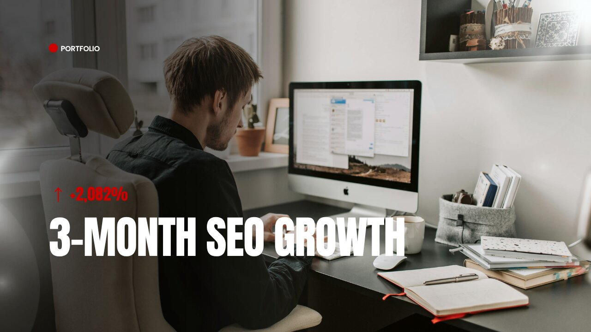
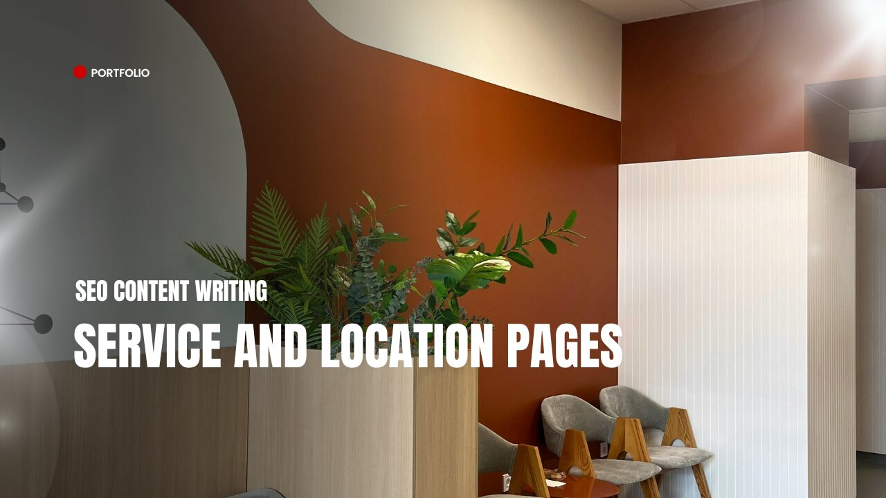
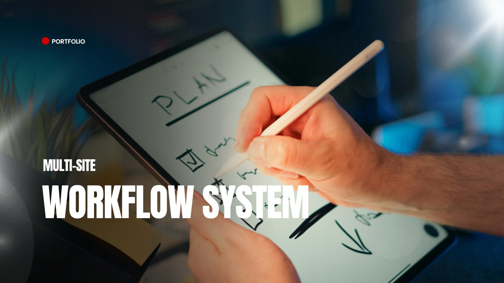

SEO Content Strategy
Builtfront.com — 3-Month SEO Growth
Scaled a B2B construction platform from 170 to 3,710 organic impressions in 90 days. Domain Rating grew from 2 to 11 with zero manual outreach.
View Case Study →
SEO Content Writing
Maxim Hair Restoration — Service Pages
Wrote optimized service and location pages for maximhairrestoration.com, targeting procedure-specific and geo-specific search intent.
View Case Study →Technical SEO
Real Estate Website — Full Technical Audit
Resolved 180+ technical issues across a multi-location real estate website, including crawl errors, broken links, and image optimization failures.
View Case Study →
Technical SEO
Construction Company — Schema Markup Implementation
Implemented structured data (JSON-LD) across a construction company's service pages, improving rich result eligibility and SERP visibility.
View Case Study →
Content Operations
Multi-Site Content Workflow System
Designed and managed a Notion-based content workflow for 8 client websites, reducing publishing bottlenecks and maintaining consistent quality at scale.
View Case Study →